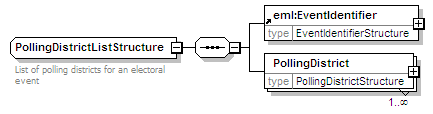
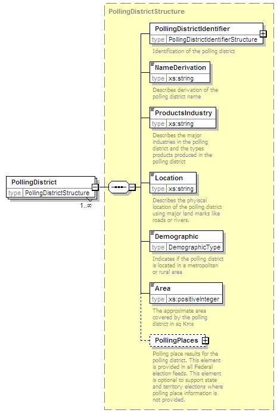

| diagram |  | ||
| namespace | http://www.aec.gov.au/xml/schema/mediafeed | ||
| children | EventIdentifier PollingDistrict | ||
| annotation |
|
||
| source | <xs:complexType name="PollingDistrictListStructure"> <xs:annotation> <xs:documentation>List of polling districts for an electoral event</xs:documentation> </xs:annotation> <xs:sequence> <xs:element ref="eml:EventIdentifier"/> <xs:element name="PollingDistrict" type="PollingDistrictStructure" maxOccurs="unbounded"/> </xs:sequence> </xs:complexType> |
| diagram |  | ||||||||
| namespace | http://www.aec.gov.au/xml/schema/mediafeed | ||||||||
| type | PollingDistrictStructure | ||||||||
| properties |
|
||||||||
| children | PollingDistrictIdentifier NameDerivation ProductsIndustry Location Demographic Area PollingPlaces | ||||||||
| source | <xs:element name="PollingDistrict" type="PollingDistrictStructure" maxOccurs="unbounded"/> |